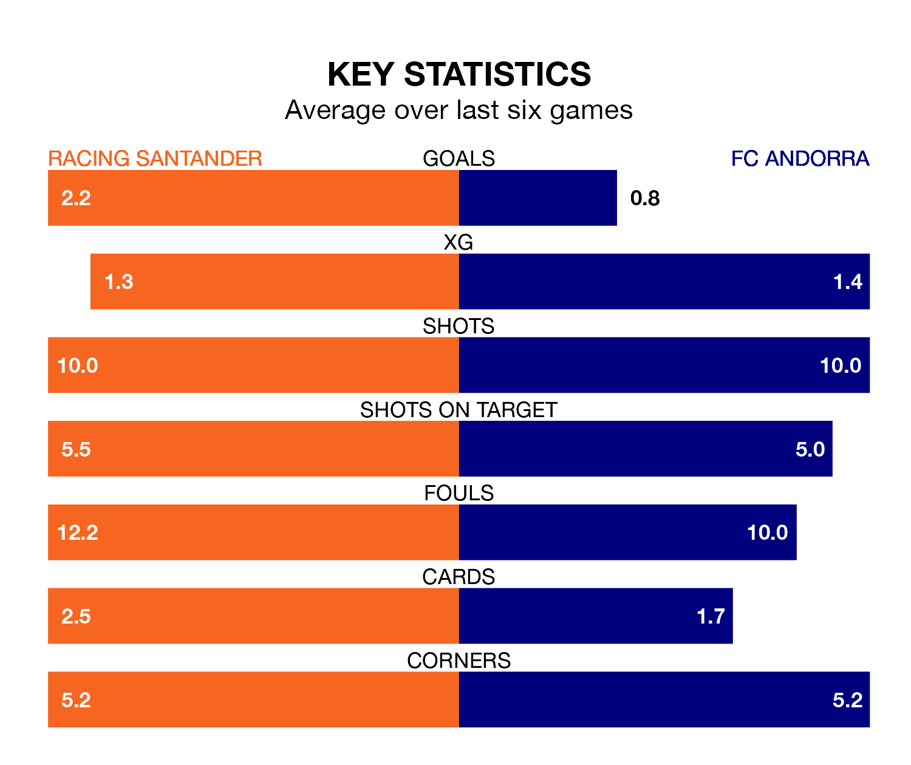

Both Racing Santander and FC Andorra will be looking to extend their unbeaten runs at Campos de Sport de El Sardinero on late Tuesday.
The two sides have gone five Segunda División matches since they last lost – during which Racing have won two and drawn three, and Andorra have taken a win and four draws.
With 34 goals in 20 games so far this season, Racing are the league's highest scorers with 1.7 goals per game. But they are conceding more than average too, letting in 29 goals at a rate of 1.4 per game.
Andorra, meanwhile, are below average scorers, with 0.9 goals per game, compared to a league average of 1.2. They have conceded 1.2 goals per game.
In Gerard Fernández Castellano, Racing Santander have the league's sharpest shooter so far this season. He has notched 10 goals in 19 appearances.
His goal rate of one every 123 minutes is quicker than that of Manuel Nieto Sánchez, FC Andorra's top scorer with a goal every 213 minutes, and a total of four goals in 19 games.
The away side are 17th in the table after 20 games, of which they have won six and drawn five, earning 23 points.
The hosts are nine places ahead of Andorra in eighth, with eight wins and six draws putting them on 30 points.
Racing's last match was on Saturday, a 3-3 draw against CD Eldense, with Germán Sánchez Barahona, Iván Morante Ruiz and Juan Carlos Arana Gómez getting the goals for Racing Santander.
Andorra drew 1-1 with RCD Espanyol last time out, also on Saturday, with Iván Gil Calero on the scoresheet.
Tuesday's match will be refereed by Saúl Ais Reig, who has taken charge of 10 Segunda División games so far this season, issuing no red cards and booking 44 players. He has awarded three penalties.
The last Racing game Ais Reig refereed was a 2-1 home win against Albacete Balompié on September 23. His last Andorra match was their 2-0 win at home against AD Alcorcón on October 15.
